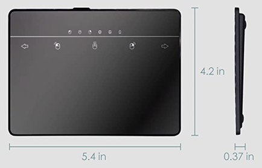

Standing Trackpad
Co-Designer
My co-designer is my dad (Dennis). He is 49 years old and works as a project manager, spending the workday on the computer. In his free time, he enjoys reading, cooking, watching movies, and running.
Over time, he developed carpal tunnel syndrome from extensive computer mouse use with his right hand. This causes wrist pain and a numb feeling in his hand. To take the pressure off of his wrist, he switched to a vertical mouse. However, he still felt strain from using a scroll wheel and pushing down on the mouse to click. Trackpads and trackballs also didn’t improve his condition because they required him to keep his wrist in a tense position. Currently, he is looking for a solution that allows him to keep his arm and wrist as relaxed as possible without interrupting his workday.
Co-Designer Needs Statement
- The product must keep his hand in a loose position rather than gripping an object.
- The product must allow him to use mouse functions (scrolling + clicking) without straining wrist.
- The product must prevent his wrist from being pressed on a surface.
- The product must be comfortable to use while standing up.
Product Requirements
- Can scroll/click while keeping hand close to relaxed position
- Tap to click trackpad
- Adjustable position
- Allows hand to be in natural position when standing
- Stable
- 26.5 inches high for standing position (from floor to bottom of trackpad)
- Lightweight
Initial Brainstorming Narrative
My co-designer spends the majority of his day using a computer and mouse at work and felt frustrated with the frequent pain he felt in his wrist. This pain often interfered with his workday, so I wanted to make an assistive device that would allow my co-designer to work with his hands, wrist, and arm in a less strained position throughout the day.
Initially, I thought of adding different grip options on his mouse to prevent his hand from remaining in the same grip position. However, gripping a mouse and using a scroll wheel both eventually put stress on his wrist. During the interview process, I also learned that he prefers to stand up when working; his most comfortable standing position was having his arms straight and hands relaxed at his sides. Based on this information, I decided to put a trackpad in a vertical position at the height his hand reached when relaxing his arms at his side. The trackpad would be placed in a 3d printed case, then secured by fabric straps that clip onto my co-designer’s pants. Therefore, he would potentially be able to keep his hands and arms as close to his relaxed position as possible.

Initial Prototype
Initially, I thought of adding different grip options on his mouse to prevent his hand from remaining in the same grip position throughout the day. This idea involved either being able to change the angle of the mouse or having multiple grip positions available. While my co-designer liked the vertical position of the mouse, he expressed that gripping the mouse and having to use a scroll wheel would still eventually put stress on his wrist.
Instead of building off of his current mouse, I thought about using a trackpad to avoid having him grip any object at all. I switched the idea of a mouse that could change angles to a trackpad that could be used at multiple angles.
My co-designer liked the idea of a trackpad as an alternative to a mouse. In the past, he had tried a trackpad, but it required him to keep his wrist and fingers in a raised, tense position. At this point, we were leaning towards a product that was in a vertical position and did not require his hand to hold it.
To brainstorm more concepts, I looked back at my interview notes. During the interview, a discussion about his work setup had come up. I learned that he prefers to stand up while he works at the computer; his most comfortable standing position was having his arms straight and hands relaxed at his sides. Based on this information, I decided to modify the vertical trackpad idea and attempt to position the trackpad where his fingers would reach when his hands were just relaxed at his sides.
The initial idea included a vertical trackpad that would be strapped around my co-designer’s leg, so that he could use mouse controls while standing up and keeping his hands and arms as close to his relaxed position as possible. After bringing this idea to my co-designer, we agreed that having a strap around his leg for several hours at a time would make it harder for the trackpad to stay in place, and more importantly, feel uncomfortable for him to move freely.
Eventually, we decided on having the trackpad attached to straps that would clip to his pants, essentially hanging the trackpad down to where his hands would be positioned.
I am trying to lessen the wrist pain that my dad feels when using a mouse. I will know that I have solved it when my co-designer is able to use the product without feeling wrist pain.
With this prototype, I am trying to figure out the most optimal position of the trackpad that would allow my co-designer to use mouse controls with his hands and arms relaxed at his sides when standing up. Once we find an approximate position, I will find different ways to hold the trackpad up.


Testing Plan
Iteration design objective:
- Find a comfortable position for trackpad to be at
- Find out whether fabric straps can be used to hold the trackpad up
Testing Procedure
I clipped the fabric straps to my co-designer’s pants, asked him to mimic scrolling and clicking motions on the cardboard, and observed whether the trackpad would move from its initial position.
Test Results
Observations
- The trackpad slides out of position when fingers scroll in different directions
Feedback From Co-designer
- Cardboard representation of trackpad was too light and kept shifting positions
- Wants the straps to be adjustable
- Concerned about actual trackpad being uncomfortable to rest on side of leg
Prototype Conclusions
- A trackpad holder would need more friction to not slide against clothing
- Fabric straps wouldn’t be able to attach to the actual trackpad
- Scrolling directions on vertical trackpad might not be intuitive
- Trackpad might cause inconvenience when walking around, taking breaks, etc.


Second Prototype
Now that I had purchased an actual trackpad, I realized that I wouldn’t be able to put fabric straps directly on the trackpad. I decided to make a case for the trackpad, and attach the straps to the case. I built an initial prototype of the case out of cardboard and placed the actual trackpad inside to see if it was convenient to use. I also wanted to find ways to prevent the trackpad from sliding out of place when in use.
Prototype design objective
- Find out if the trackpad case feels comfortable when resting on leg
- See if trackpad disrupts his current workflow
- See if adding rubber to the back of the trackpad prevents it from slipping
Testing Procedure
- Two trials were tested: one without rubber bands taped on the back of the trackpad case, and one with rubber bands taped on the back of the case
- To test if using the trackpad in the case interfered with his usual workday, we tested multiple workflows such as checking his email, scrolling through webpages, and clicking on different links.
Test Results
- The trackpad case stayed in place when the rubber bands were taped to the back of the case.
- His wrist was sometimes bent at a slight angle
- Concerned about actual trackpad being uncomfortable to rest on side of leg
Feedback From Co-designer
- The right and left scrolling directions on the trackpad should be swapped to feel more intuitive.
- The prototype straps are too short.
- Trackpad doesn’t restrict his arm/hand movement.
- He didn’t realize that he would sometimes bend his wrist slightly; this was due to muscle memory from using a trackpad on a desk in the past.


Prototype Conclusions
- Trackpad scrolling directions need to be customized.
- Rubber tape should be added to the back of the final prototype case to mimic the effect of the rubber bands.
- Fabric straps should be adjustable to account for different postures on different days.
- It would take some time for my co-designer to get used to not having to bend his wrist when clicking and scrolling
Final Prototype
Bill of Materials
- Wireless trackpad - 1 - $39.99
- Cotton strap - 5 yards - $6.99
- 1-inch adjustable buckle - 2 - $6.39 (30 pc)
- Belt clips - 2 - $8.99 (10 pc)
- 3D printed PLA trackpad case - 1 - $19.66
Build Instructions
Step 1: Measuring height of trackpad from the ground.
Have the co-designer hold a cardboard rectangle or piece of paper at their side and measure from the ground up to the bottom of the rectangle to find the optimal height of the trackpad.
Step 2: Measure trackpad length, width, and thickness.

Step 3: Use trackpad measurements to create CAD of case
Take measurements of the trackpad and create a case with 0.5 mm added on all sides of the trackpad. When adding loops for the straps on top, make the loops wide enough to fit the strap width. (See onshape file for more details)
Link to CAD: https://cad.onshape.com/documents/e4a7c59f6dfb1bd3cad158b3/w/489c147a91f159b37a13c2e4/e/2edc79bae8304a82b565b988

Step 4: Make the adjustable straps
I followed this video to make the straps: https://youtu.be/piORikdsmsw. Make sure that the straps are long enough to keep the trackpad at the optimal height found in step 1.
Step 5: Attach the straps to the case
Put the end of the strap that is not looped in the buckle through the loop in the case. See image below
Test Plan Prototype design objective:
- See if the 3D printed case was convenient for him to use
- See if he bends his wrist while scrolling and clicking
- See if he is able to relax his wrist while using the trackpad
Testing Procedure
I had my co-designer click and scroll through the usual workflows that he would go through on a daily basis.
Observations
- At certain times he would alternate between having his wrist at a slight angle, then completely relaxing it.
- Had to keep bending and straightening arm to use both keyboard and trackpad
Feedback from co-designer:
- Controls feel more intuitive after switching right and left scrolling directions
- It is more inconvenient to switch between keyboard and trackpad because the trackpad is now farther from the keyboard than his current mouse.


Future Improvements
In the future, I would like to find a way to make it more convenient for him to switch between using the trackpad and his keyboard, since he frequently alternates between the two during his workday. Right now, my co-designer feels that the trackpad is comfortable to use, but might be slightly inconvenient within his current setup.
Additionally, I would test out whether it is necessary to place a cushion between his leg and wrist to prevent his wrist from bending inwards. During our tests, he would bend his wrist slightly to rest it against his leg, but did not realize he was doing this. I would try to put a cushion between his wrist and his leg for either comfort or getting used to having his wrist loose while using the trackpad.
Scalability
My solution is specific to my co-designer in that the trackpad height is meant to be where his right hand rests on his leg, and this length would be different for each person. The product is also specific to his environment because he uses a standing desk and prefers to stand for the large majority of the day. However, the size of the trackpad case can be modified to fit differently sized trackpads.
This product could potentially help people with arthritis, nerve damage, or other conditions that might prevent someone from gripping a normal mouse. My product doesn’t need to be gripped, so people can use it with their hand relaxed at their side with some slight motion of their fingers.
If I were to create mass amounts of this product, it would have to be for one standard trackpad size. The case could still be 3D printed using PLA plastic material, but the straps would also be made at a standard length. The length of the straps could cover a wide range of individuals, because the straps are adjustable. I would also use a sewing machine to attach the straps to the clips and case to save time.
Design Process Reflection
If I were to do this project again, I would have also tried out more prototypes in the beginning of the process, because it would have been helpful to have physical prototypes of several different ideas. For this design process, I made a low fidelity prototype for one idea and kept going with it because I felt like I needed to settle on a certain idea quickly. While my co-designer ended up liking the current product in the end, I would have liked to try out different ideas in the beginning to have a better idea of the pros and cons of each idea. However, I did try to make the best use of the cardboard and duct tape I had to continuously upgrade my prototypes over time until I reached my final prototype.
I also would have set aside more time to account for unexpected changes to my product. With the limited amount of time we had, there wasn’t much time for many significant changes to my product. But, it is inevitable that things will go wrong, so I would like to make sure that I account for unpredictable problems.